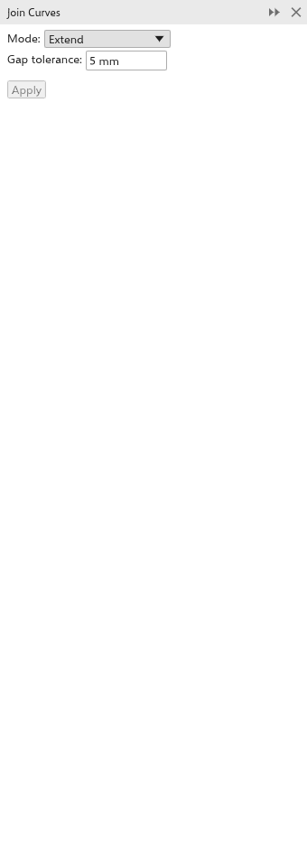

Kurven verbinden
Das Andockfenster Kurven verbinden schließt die Lücken zwischen den Enden von Kurven, zum Beispiel bei Linien, die sich in einer Ecke treffen sollten, aber kurz davor aufhören. Öffnen Sie es mit Objekt > Kurven verbinden.

Kurven verbinden
- Wählen Sie die Kurven aus. Offene Teile innerhalb einer Kurve werden ebenfalls verbunden.
- Wählen Sie, wie die Enden verbunden werden:
- Verlängern: Beide Enden laufen in ihrer Richtung weiter, bis sie sich als Ecke treffen. Treffen sich die Richtungen vor beiden Enden nie, verbindet sie eine gerade Linie.
- Fase: eine gerade Linie zwischen den Enden.
- Abrundung: wie Verlängern, dann wird die Ecke mit dem Radius abgerundet (anfangs 2 mm).
- Bézierkurve: eine glatte Kurve, die in den Richtungen der Enden abgeht und ankommt.
- Stellen Sie die Lückentoleranz ein (anfangs 5 mm). Weiter entfernte Enden werden nicht verbunden.
- Klicken Sie auf Zuweisen.
Das nächstgelegene Endenpaar wird zuerst verbunden, dann das nächste, bis innerhalb der Toleranz kein Paar mehr übrig ist; die beiden Enden eines Teils schließen ihn. Die verbundene Kurve übernimmt Platz, Füllung und Umriss der zuletzt ausgewählten Kurve, und die anderen Kurven werden entfernt. Liegen keine Enden nah genug beieinander, ändert sich nichts, und die Statusleiste weist darauf hin.
Sie können auch zwei Endknoten einer Kurve mit dem Werkzeug Form verbinden; siehe Kurven mit dem Formwerkzeug bearbeiten. Wenn Sie vom Ende einer ausgewählten Kurve aus zeichnen, wird sie ebenfalls fortgesetzt; siehe Eine Kurve fortsetzen.